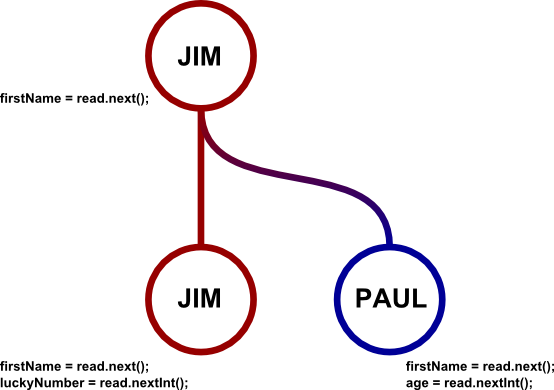

Git is a simple yet powerful version control system. It keeps track of the modifications made to a project (usually code) and allows for multiple versions of the same project to be tracked simulataneously.
public static main(){
Scanner read = new Scanner(System.in);
String firstName;
System.out.println("Please enter your first name");
firstName = read.next();
}
He then decides he wants their entire name including their last name. So then the code becomes:
public static main(){
Scanner read = new Scanner(System.in);
String name;
System.out.println("Please enter your name");
name = read.nextLine();
}
He then invites Paul to help him out with some code and Paul makes these changes to also ask for an age:
public static main(){
Scanner read = new Scanner(System.in);
String name;
int age;
System.out.println("Please enter your name");
name = read.nextLine();
System.out.println("Please enter your age");
age = read.nextInt();
}
Jim then comes back to the code and is appalled that Paul would ask for an age (this code is used for job recruiters) so deletes everything and instead asks for a lucky number:
public static main(){
Scanner read = new Scanner(System.in);
String name;
int luckyNumber;
System.out.println("Please enter your name");
name = read.nextLine();
System.out.println("What is your lucky number");
luckyNumber = read.nextInt();
}
So in short two people have to share the same code that want to go different ways. This is easily done with git branching.
Jim would start the same way but when Paul joins in, Paul makes a new branch for his own to work on.

Another cool git feature is that if Jim decided that asking for age was a good idea later on, the two could then merge their code together using the built in git-merge function.